Base Imports
[1]:
# Base imports
import sys
sys.path.append('../')
import numpy as np
import pandas as pd
from holisticai.utils import pandas_to_numpy
Classification Bias Task
[2]:
from holisticai.bias.plots import success_rate_plot
from holisticai.bias.plots import disparate_impact_plot
from holisticai.bias.plots import statistical_parity_plot
from holisticai.bias.plots import abroca_plot
from holisticai.bias.plots import accuracy_bar_plot
[3]:
p_attr = np.array(['A']*100+['B']*100+['C']*100)
l = np.linspace(0,1,100)
y_pred = (np.array(list(l)+list(l**2)+list(l**3))>0.4)
[4]:
group_a = p_attr=='A'
group_b = p_attr=='B'
y_score = np.array(list(l)+list(l**2)+list(l**3))
y_true = y_score+np.random.random(y_score.shape)>0.5
[5]:
abroca_plot(group_a, group_b, y_score, y_true)
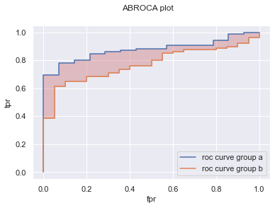
[6]:
from holisticai.bias.metrics import abroca
abroca(group_a, group_b, y_score, y_true)
[6]:
0.1039514119601328
[7]:
success_rate_plot(p_attr, y_pred)
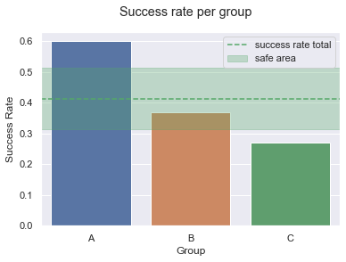
[8]:
disparate_impact_plot(p_attr, y_pred, compare_to='B')
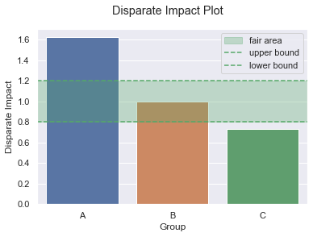
[9]:
statistical_parity_plot(p_attr, y_pred, compare_to='A')
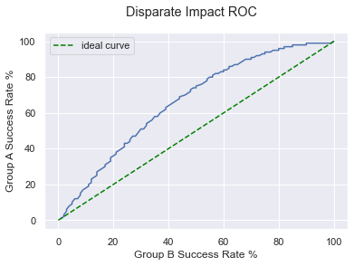
[10]:
accuracy_bar_plot(p_attr, y_pred, y_true)
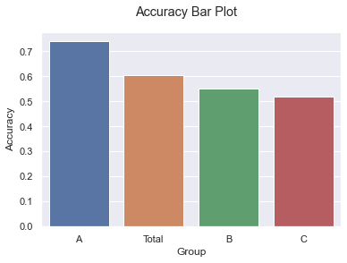
[11]:
from holisticai.bias.metrics import accuracy_diff
accuracy_diff(group_a, group_b, y_pred, y_true)
[11]:
0.18999999999999995
Regression Bias Task
[12]:
from holisticai.bias.plots import regression_bias_plots
from holisticai.bias.plots import success_rate_curves
[13]:
p_attr = np.array(['A']*100+['B']*100+['C']*300)
group_a = p_attr=='A'
group_b = p_attr=='B'
l = np.linspace(0,1,100)
y_pred = np.array(list(l)+list(l**2)+3*list(l**3))
regression_bias_plots(group_a, group_b, y_pred)
success_rate_curves(p_attr,y_pred)
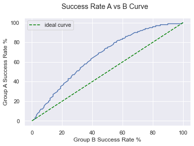
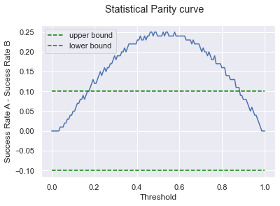
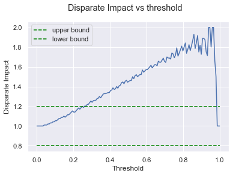
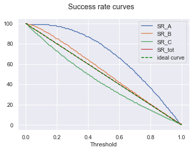
[14]:
from holisticai.bias.plots import rmse_bar_plot, mae_bar_plot
y_true = np.array(list(l**2)+list(l**1.5)+3*list(l**2))
rmse_bar_plot(p_attr, y_pred, y_true)
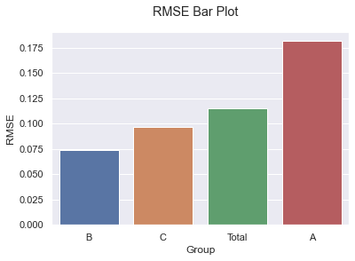
[15]:
mae_bar_plot(p_attr, y_pred, y_true)
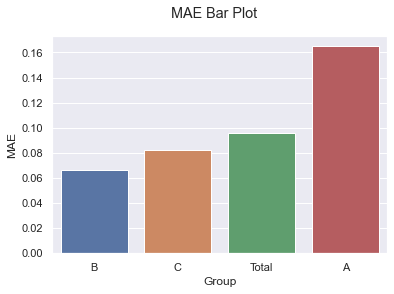
Recommender Bias Task
[2]:
from holisticai.bias.plots import exposure_diff_plot, long_tail_plot
[3]:
df = pd.read_csv('../data/small_test_recommender.csv')
group_a, group_b= pandas_to_numpy(df,cols = ['group_a','group_b'])
mat_pred = df[['item_1','item_2','item_3','item_4']].to_numpy()
exposure_diff_plot(group_a, group_b, mat_pred, top = 2, thresh = 0.5, normalize=True, item_names=['cat','dog','ball','squirrel'])
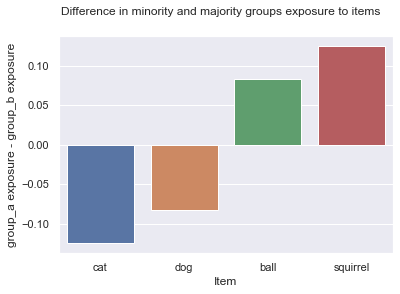
[4]:
long_tail_plot(mat_pred, top = 2, thresh = 0.5, normalize=True, item_names=['cat','dog','ball','squirrel'])
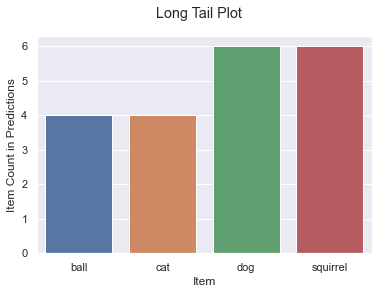
Clustering Bias Task
[11]:
from holisticai.bias.plots import pca_scatter_plot
[12]:
p_attr = np.array( ['A','A','A','A','B','B','B','B','C','C'])
y_pred = np.array([0,1,1,2,0,0,0,0,1,2])
y_true = np.array([0,1,0,2,0,0,1,0,1,2])
data = np.array(
[[-1,1],
[1,1],
[1,1],
[0,-1],
[-1,1],
[-1,1],
[-1,1],
[-1,1],
[1,1],
[0,-1]])
data = data + np.random.normal(scale=0.2,size=(10,2))
centroids = np.array(
[[-2,1],
[1,2],
[0,-2]])
[13]:
pca_scatter_plot(data, p_attr, y_pred)
[13]:
(<Figure size 432x288 with 1 Axes>,
<AxesSubplot:xlabel='PCA 1', ylabel='PCA 2'>)
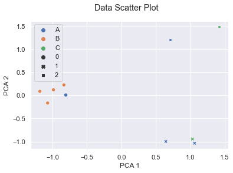
Multiclass Bias Task
[14]:
p = np.array( ['A','A','A','A','B','B','B','B','C','C'])
y_pred = np.array([0,1,2,0,1,2,0,1,2,0])
y_true = np.array([0,1,1,0,1,0,2,1,2,1])
[15]:
from holisticai.bias.plots import success_rate_matrix_plot
success_rate_matrix_plot(p, y_pred, groups=['A','B','C'], classes = [0,1,2])
[15]:
(<Figure size 432x288 with 2 Axes>,
<AxesSubplot:xlabel='Class', ylabel='Group'>)
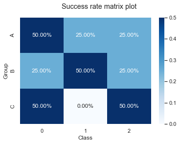
[ ]: